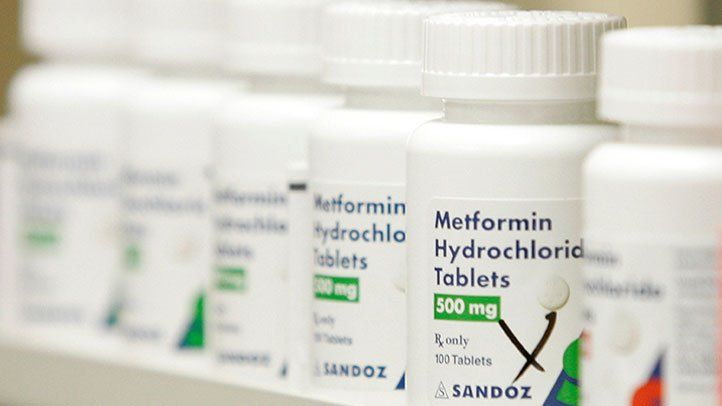

Learn To Distinguish Reality From Fiction And Fight Diabetes
This is the main misconception about American life-shortening diabetes. Big Pharma Doesn’t Want You To Know About This!
 SHARE
SHARE


Dr. William Clapton is an American endocrinologist.
As of today, he is considered the best diabetes care specialist in the country. All celebrities with diabetes got out of their way to get a consultation from him.
This includes patients from Canada, France, Germany, Great Britain and other countries - they all go straight to him. He is one of the most important endocrinologists in the country.
He’s written 32 scientific books, and there are 3 times as many scientific publications in journals in his professional arsenal.
Dr. William Clapton rarely gives interviews, but agreed to answer our correspondent's questions. Below you will find important tips to help in your fight against diabetes.
He also ABSOLUTELY CERTAIN that Type II Diabetes in most cases can be treated with the help of modern expertise!
Topics covered in the article:
• What is the most important thing when it comes to treating diabetes?
• Why do 95% of diabetics fail to cope with their diseases?
• When is it possible to fight diabetes
Metformin is not what you need! Doctors sound the alarm while pharmacy chains accept patients.
Dr. William Clapton:
“As of today, metformin-based drugs are the basis of practically all treatment methods. However, this is a delusion shared by illiterate patients and doctors. Metformin is a straight path to illness and untimely death. This isn’t treatment. If you come to your doctor with type 2 diabetes and he prescribes treatment based on these drugs, run away from such a doctor immediately.
All of these drugs increase blood insulin to critical levels. With this amount of insulin, the blood becomes thick, like condensed milk. In large quantities, insulin causes colossal harm to the body. It literally destroys the liver, kidneys and other excretory organs. Insulin is similar in consistency and action to stomach acid. Imagine what would happen if stomach acid filled your internal organs. It would burn right through them!
Elevated insulin levels corrode cells, thereby contributing to their abnormal division, and this is already nothing less than oncology. For this reason, CANCER DEVELOPS IN 28% OF DIABETICS, as statistics show.
Plus, it is the high insulin content that leads to the rapid clogging of blood vessels with cholesterol plaques, since insulin-rich blood becomes thick and starts moving slower. As a result, blood vessels become clogged with cholesterol plaques, which in turn leads to pressure surges. Hypertension accompanies 98% of diabetics. Many other problems with the cardiovascular system appear as well.
List of threatening consequences of metformin-based therapy:
•Gastrointestinal disorders (most often diarrhea, heartburn, belching, stomach ulcers)
•Hypertension - pressure surges, especially in the evenings, headaches, stuffy ears, waves of fear.
•Cirrhosis of the liver - the liver becomes a connective tissue and stops purifying the blood, the whole
body is filled with toxins
•Kidney stones due to intensive excretion of salts and sugar
•Oncological diseases
•Early death due to destroyed blood vessels
•Blindness
The development of complications, of course, depends on the time and amount of drug intake, as well as on the individual characteristics of a person. However, IT IS IMPOSSIBLE TO AVOID THEM ENTIRELY!
If Metformin Kills, Why Is It Used?
Unfortunately, not many doctors today actually care about the health of their patients. I would even go as far as to say they couldn’t care less. They just do their job and get paid for it. They don't care if you get well or not. That’s why without a second thought they prescribe whatever their superiors or the Ministry tell them to. And what they’re told to prescribe are metformin-based drugs, since their sale brings good profits. And it also provides an effect, albeit a temporary one.
Such indifference can’t cure diabetes!
Patients, as a rule, do not know what consequences await them from the constant use of this drug, and doctors do not find it necessary to talk about it.
Treating diabetes with chemically aggressive drugs should be illegal! But type II diabetes can be cured! All you need to do is choose the correct treatment method!
Dr. William Clapton:
I often have patients who have been treated with metformin for several years. These are sick people, people who have aged far sooner than they should have.
Still, most often, patients find out they have type II diabetes during a check up. At the same time, up to that point, the patient, as a rule, felt fine and would never have thought that they had high blood sugar. And then they are prescribed metformin with an increased dosage.
As a result, the sugar levels drop, but over time, the person's condition begins to gradually deteriorate. The patient begins to complain of chronic fatigue, obesity, high blood pressure, headaches. Their legs begin to swell, and in the morning so does their face. They feel like bells are constantly ringing in their ears. Fingers go numb and limbs grow cold. Eyesight falls. Their memory deteriorates.
The doctors say that it's all because of diabetes. But in fact, it’s all because of insulin! Or rather, because of metformin, which increases the production of hormones to abnormal levels!
HOWEVER, DO NOT THINK THAT YOU DO NOT NEED TO TREAT DIABETES AT ALL. If forced to choose between treating diabetes with metformin and not treating it at all, then, of course, you should pick the first option. Type 2 diabetes will kill you even earlier if left untreated. Just with other symptoms.

The internal organs of diabetics look just like these candied cherries. The liver, stomach, kidneys, heart, and most importantly the blood vessels.
The sugaring of blood vessels and internal organs!
Imagine candied cherries or raspberries. The same thing happens to all your blood vessels if you have diabetes.The walls of blood vessels become saturated with sugar and become brittle. As a result, the vessels lose the ability to narrow and expand. The smaller vessels die off first, promptly followed by the medium and large ones. Vessels feed the internal organs. The deterioration of blood supply leads to the development of chronic diseases.
How diabetes is killing you from the inside out:
Loss of eyesight.
Diabetes makes a person go blind. Forever. It is impossible to restore diabetes-damaged eyesight even with the help of laser correction, since retinal detachment occurs as a result of many hemorrhages.
The kidneys get destroyed.
Sugar just clogs up the ureters. The environment in the kidneys becomes incredibly sweet. Sugar is a preservative. It preserves the kidneys. Gradually they die. Chronic renal failure is just the tip of the iceberg. The kidneys can be lost completely.
The joints stop moving.
Joint movement is provided by synovial fluid. When the vessels stop nourishing the joint, the synovial fluid is no longer secreted. The joint just dries up. As a result the person is forced to endure excruciating pain. Even painkillers do not help. The joint freezes completely. A person loses the ability to move independently.
The nervous system breaks down.
The nerves, like many other organs, suffer from excess sugar. Over time, the diabetic develops psychoses, the person becomes emotionally unbalanced. They are often tormented by depression, nothing pleases him. They just want to lie down and die.
The skin begins to rot!

First, it dries up a lot, scratches appear, followed by eczema and ulcers. The muscles and bones begin to rot and detach from the skin. A foul odor appears. This all leads to gangrene.
No matter how you look at it diabetes is a very dangerous disease. Perhaps even the most dangerous. I am very sorry for people who are diagnosed with diabetes. I try to help them, but everything depends, first of all, on them.
If metformin is out of the question, how do we treat diabetes? Take, for example, the average senior citizen who developed diabetes with age. Now their sugar levels are constantly rising. Let's say they are taking metformin and are not feeling well. What can they do to fight the diabetes? Can they do it on their own?
Dr. William Clapton:
Let me reiterate - type 2 diabetes is a complex, dangerous and systemic disease. This is not the common cold or a case of diarrhea. It is much more serious. The disease affects the entire body, and therefore treatment must also be systemic. It is INSUFFICIENT AND HARMFUL to simply raise your insulin levels and be done with it.
Diabetes treatment should be comprehensive and should be done only with drugs that, in addition to lowering the sugar levels, also ensure the safety of the rest of the body.
If we talk about specific drugs that people can use to treat diabetes on their own, then I would recommend a drug called GlycoBoost . It was developed in 2015 by the Institute of Endocrinology of USA. It isn’t random chemical elements like metformin, but a NATURAL ANTI-DIABETIC COMPLEX, WHICH CONTAINS OVER 60 (!) DIFFERENT ACTIVE COMPONENTS.
The drug contains all the vitamins, macro- and microelements most necessary for diabetics. GlycoBoost contains 28 herbal extracts collected from different parts of the world.
GlycoBoost is good because it does not harm the body. In fact, it even strengthens it. But most importantly, it has a positive effect on the disease from all sides.
60 active ingredients is a lot. No other drug in the world can boast such a rich composition.
GlycoBoost's effectiveness is unprecedented! After we started recommending this remedy to our patients, the recovery percentage… And I mean TOTAL RECOVERY FROM DIABETES MELLITUS increased to 96%. This means that 96 out of 100 people say goodbye to their condition. Their sugar no longer rises and they feel great.
An Honest Letter
I want to show you a letter from Abby Hicks, a senior citizen from Seattle. She did not receive treatment at our clinic (she could not come to us, as she did not feel well). I told her over the phone about GlycoBoost . As a result, she was cured.
This is what she wrote.

Abby Hicks, 67. Abby Hicks A senior citizen from Seattle that is struggling with diabetes.
“Why do other doctors hide from the people such a wonderful drug that is GlycoBoost ? I had terrible diabetes. For 18 years it was my companion. Ever since I turned 49. Recently it had led to serious complications in the eyes and kidneys. My kidneys barely functioned, I reeked of acetone. My daughter couldn’t stand to be in the same room with me. Add to that constant leg ulcers, blackened legs and fingertips. I was literally dying. Our doctors said I didn't have much time left.
I told my daughter to think about my last days. I had a good life, but I still didn't want to die. Even when I screamed in hysterics that I wanted to drop dead, I didn’t actually mean it. Your clinic became my last hope. I knew that you are successfully treating diabetes, but still somehow I couldn’t believe it until the end - after all, everyone says that it cannot be cured, that I’ll just be wasting my time. That’s why I didn’t go in person. But then I saw you on TV and decided to call you.
Thank you so much for your consultation and for the GlycoBoost you sent me. I began to take it immediately. 4 months have passed since that moment and I am still alive. And the doctors say that I shouldn’t plan on dying any time soon now that my blood sugar is normal. But I myself feel it. In the past 10 years I have not felt as healthy and free of diabetes as I feel now! I began to sleep well, the feeling of unquenchable thirst disappeared, I stopped going to the toilet so often, the fatigue and constant weakness also disappeared without a trace. The pressure surges stopped. My eyesight improved. I haven’t completed my treatment yet, but I am sure that I will win this battle. Thank you so much for GlycoBoost ."
Tell us how quickly you can overcome the disease with GlycoBoost
Frankly, the process is not fast, but it is thorough. It takes several months. It may take six.
You need to be prepared for long-term treatment. But after treatment, you no longer need to take any drugs, and you can live a normal healthy life, like the one you lived before diabetes.
GlycoBoost helps everyone, including those with compromised immune systems.
It is necessary to take GlycoBoost in courses. You take it for 2 weeks, then take a break for 4-5 days and repeat. I will tell you in stages how the recovery process happens.

Revitalizes The Blood Vessels
The main effect of GlycoBoost is that it not only removes sugar from the blood and thus normalizes glucose levels. It also dissolves sugar, which has already penetrated the walls of blood vessels thanks to one of its ingredients - Ginkgo Biloba. It’s sort of like the blood vessel walls are thawed out and regain the ability to narrow and stretch. The blood clots get dissolved, the vessels are cleansed. Small capillaries are restored. As a result, the person's pressure stops spiking, the weakness and drowsiness disappear, and wounds and cuts start to heal faster. In addition, the person just gets more energy. They immediately get the urge to do something around the house or in the garden.
Normalizes Glucose Levels
GlycoBoost does not raise insulin levels, so it is harmless. But in addition to that it also has a positive effect - namely, it reduces insulin resistance. This is a very remarkable property. The biologically active components of the drug penetrate directly into the cells of muscles, fat and liver and stimulate them in such a way that they begin to better respond to the presence of the hormone in the bloodstream. In medicine, this process is called "secondary cell education." As a result, over time, the cells begin to consume glucose more actively, which leads to a decrease in its concentration in the blood. This is the safest way for the body to utilize glucose.
Patients begin to feel great at any time of the day, including after meals. They are no longer thirsty. No more swelling, rashes or itching genitals. The constant bathroom breaks also stop.
As for the physical indicators: the level of glucosylated hemoglobin decreases, the concentration of sugar and acetone in the urine decreases.
Melts Excess Fat!
Excess weight is what aggravates the condition of a diabetic by 4-5 times. That’s why GlycoBoost also has a weight loss effect on the body. It happens for two reasons. First, cells begin to more actively convert sugar into energy. And second, the drug contains a highly concentrated extract of creeping tribulus, which is a powerful natural fat burner.
Losing 10 kg reduces the risk of developing dangerous diabetes complications by 50%.
Restores potency
Many diabetics are impotent. One of the amazing effects of GlycoBoost is aimed at normalizing testosterone levels and restoring healthy potency. Even at 50, 60 years, men regain the ability to have sex.
Improves the condition of the skin, bones and muscles
Even heavily damaged skin is restored. Ulcers heal, the skin no longer festers and dries out. The same thing happens to the bones, their healthy composition is restored, they stop being brittle. Healing occurs in all tissues, the muscles become elastic.

The butterfly effect for any diabetic!
GlycoBoost works like the flap of a butterfly's wing that triggers a healing chain reaction that restores the internal organs and improves the overall well-being. From the healing of blood vessels to the restoration of eyesight and joints.
Easy awakening
You wake up in the morning and just fly off your bed — you don't need to force yourself to get up, kneading and rubbing your stiff legs, creaking your back and neck. From the very morning your body is full of energy and strength.
Excellent health and mood
All day. You sleep well and get enough of it. You feel rejuvenated. You don't have to go to the toilet all the time at night. Nothing hurts or itches.
Tasty breakfast
Your menu will expand significantly. You will no longer need to follow a strict diet. You will remember the taste of those dishes that currently can only dream of. No more low-carb diet. Enjoy the taste of your favorite food!
Enormous strength
You no longer need to worry about your legs when going outside, walking is no longer an exhausting task, you can walk or even jog all day without your legs getting tired or swollen. Sandals, shoes, socks do not bite into your swollen legs like a fork into a meat.
Absolute serenity
You are completely calm and relaxed. No more constant pain that consumes your mind, preventing you from focusing on anything else. When nothing hurts familiar things, sounds, smells play out in new, long-forgotten colors.
Excellent eyesight
Even severely damaged vision will begin to gradually recover. What used to be fuzzy will become clear. You can once again see the bus number from a distance, you can once again admire the beauty of nature.
And most importantly, you will extend your life! At the same time, even in extreme old age, you will feel healthy and energetic. You don't have to burden your relatives with taking care of you. You’ll be able to take care of yourself.
GlycoBoost shortage in American pharmacies!
As far as we know, it is extremely difficult to buy GlycoBoost in pharmacies. This drug is rarely available. Is that true? And what advice would you give to American diabetics?
- Yes, it is. GlycoBoost is produced in small limited quantities, and therefore it simply does not reach pharmacies. Most of the batch is sold abroad, another part is bought by private clinics.
But I have good news for the readers of your magazine. I consulted with my colleagues, and we decided to offer a part of the batch of GlycoBoost purchased by us to your readers at a minimal price. We will deliver the drug to people directly to their homes by mail. Anywhere in USA.
Here’s How you can get GlycoBoost ...
You need to:
1. You must be in USA. We will not ship
GlycoBoost
outside the country.
2. You can get
GlycoBoost
FOR PERSONAL USE ONLY. I kindly ask profiteers not to resell
GlycoBoost
with large mark-ups. Cashing in on the sick is inhuman!
GlycoBoost
will only be sent to a person in the amount necessary to treat ONE person (or two people - if there are
several diabetics in the family)
Take this opportunity before someone else does!
Unfortunately, we do not have this drug in sufficient quantities for all diabetics in USA. Therefore, we decided to provide it to those who leave the application on the site faster.
If you want to fight diabetes with this unique remedy, I advise you order it as early as possible while it is in stock.
(CLAIM YOURS NOW BEFORE THEY'RE ALL GONE)
Note: Dr. Clapton and his patients used GlycoBoost to treat diabetes.

Stock Update: ALMOST GONE. LIMITED Discounted Supply AVAILABLE as of:
NOTE!
Just for the visitors of this site,
GlycoBoost will be sold with a discount! Hit the "SPIN" button and win a discount! Good luck!

 SPIN
SPIN
Sanadan Dolan
Thank you for your kindness! I tried to buy GlycoBoost through another clinic. Their price was 10 times higher. I refused. And then a friend showed a link to this article. I ordered it from you. My package came quickly. I already started my treatment and have even obtained some results!
Adam Graeme
I can confirm the doctor’s words! Metformin is evil - they intentionally poison people with it in order to make money off them! I took it for 7 years. Without any result. It did nothing to prevent my blood sugar spikes. The situation was only getting worse. Then I found out about GlycoBoost . It’s like night and day. This natural drug actually improves your condition unlike dangerous chemical drugs. Folks, I recommend GlycoBoost to everyone.
Sarah Godwit
Oh, I went through so much because of my diabetes before I found out about GlycoBoost . My life was exactly like the poor woman’s in the story. Besides high sugar levels I also had very high blood pressure (200-230), which is why I would throw up constantly. Plus I was overweight – 120 kg (I’m pretty short). Edema, shortness of breath - I went through all of that. My body was rotting and often festering. But not anymore. I underwent a course treatment with GlycoBoost . Now at least I feel like a living person. I lost weight, the pressure stopped spiking. Basically, everything is fine now, I wish everyone the same.
Samantha Goldin
Great for lowering sugar. In a month, my sugar dropped from 14 mmol/l to 7.9!
Megan Smiley
Thanks, I placed an order. When the operator called me back, I asked how much of the drug is still in stock. He said that there’s still 15 packs left, but there are more and more orders coming in - looks like more people are learning about it. It might run out soon.
Lucy Watson
Any disease is suffering for some and business for others. Pharmacies have long shown their true colors - all they need from us is our money and our health!
Xander White
I have diabetes. And I recovered. Now, every year I take a course of GlycoBoost to avoid relapse. For those who have not tried this drug, I highly recommend it!
Tim McIntosh
GlycoBoost IS SOLD OUT!!!!!!!! I did not make it in time. They told me yesterday that it was still in stock…. I can’t take the diabetes any longer. I don’t know how to treat it. I had hopes for GlycoBoost . Is there really nothing I can do?
Tina Bright
I also didn’t make it. What am I going to use for treatment now??? My friend told me about GlycoBoost . She praised it very much, I also wanted to place an order, but did not have enough time. I’m devastated..
Caroline Pourdue
Hey everyone. I am 59 years old, I used to weigh 124 kg, now – only 80 kg, my height is 168 cm. My glucose levels ranged from 12 to 18, once it was even 29. Now - 5.0. I took GlycoBoost for 3 months. I am more than happy with my result. No other medicine helped me this much.
Nicky Bergara
Will it be for sale again? And when? I would also like to order it!!!
Mihal Dinga
GlycoBoost is on sale again! According to the website, the clinic has offered 1000 more packages for American diabetics! According to doctors, this is the last thing they can release.
Nicky Bergara
Thank you! I ordered it. They told me I’d get in in 2 days. Planning to start treatment immediately.
Chloe Smith
The drug is genuinely amazing. I’ve been taking it for a week and can already note the positive changes. I measure my blood sugar levels several times a day. It’s much lower than it used to be. If this goes on, I may very well recover completely.
Frida Brown
Diabetes is a very insidious disease. I’ve had it for 4 years now, there were no external manifestations, only my mouth was sometimes dry. So, I wasn’t really worried about amputated legs and such. But recently I fainted. I was taken to the hospital, where I was tested. Everything turned out to be very serious. My kidneys were in a precancerous state, my blood vessels were so worn out that the doctors couldn’t believe it. This is what happens when the disease isn’t treated in time.
Nick Whitesands
My father has diabetes and doesn't want to take pills. Does anyone know if GlycoBoost can help?
Christine Knight
Of course it can! In any case, it is better to try, especially since GlycoBoost is much cheaper than, for instance, metformin.
Alex Gill
GlycoBoost is a wonderful product. Our daughter was diagnosed with diabetes. She is only 7 years old. We didn’t want to stuff her full of chemical drugs at such a young age. We consulted with many endocrinologists. Decided to try GlycoBoost . It helped her a lot. The blood sugar levels stopped surging almost entirely. And she isn’t taking GlycoBoost any longer but is still fine.
Zoe Pettersen
08.11.2024
Thank you! I managed to order the drug before it all sold out!
Chris Jones
Thank you, thank you, thank you so much for this article, I hope it helps people.